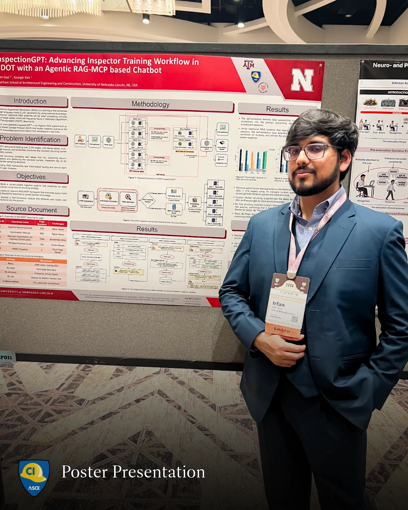
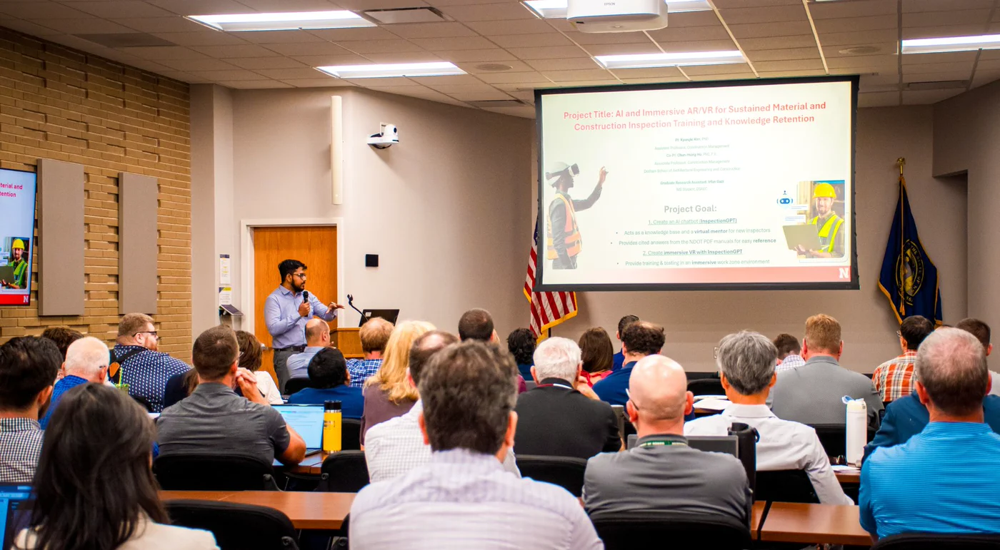

AI and VR for Construction Inspection Training
Irfan Gazi, Kyungki Kim, Chun-Hsing (Jun) Ho
University of Nebraska–Lincoln

Summary
Trainee inspectors learn on the job, and what they learn leaves with them. This project builds two tools so that knowledge stays with the agency.
InspectionGPT is a chatbot grounded in NDOT standard specifications, project contracts and tech talk videos. Every answer cites the page it came from, so a new inspector can check the source rather than trust the model. An immersive VR construction site puts that chatbot where the inspection happens, so an inspector can practise on a virtual site and ask questions as they go.
InspectionGPT
A router agent sends each question to the right source: specifications, contracts or training material. Retrieval and the tools the agent may call sit behind MCP, so the manuals stay swappable and the agent’s reach stays explicit. A self-corrective module stores past mistakes and checks new answers against them.

Does grounding help?
We compared a closed-book LLM, a single-agent RAG system and multi-agent variants on NDOT inspection questions. Grounding cut unsafe answers sharply. Adding agent orchestration did not improve final answer quality.


Videos


Outputs
- PaperEvaluating Multi-Agent and Single-Agent RAG Frameworks for Highway Construction Inspector Training. TRB Annual Meeting, 2027.
- PosterInspectionGPT: Advancing Inspector Training Workflow in NDOT with an Agentic RAG-MCP Based Chatbot. CI & CRC Joint Conference, San Antonio, TX, 2026.
- TalkAI and Immersive AR/VR for Sustained Material and Construction Inspection Training and Knowledge Retention. NDOT & UNL Research Summit, 2026.


Citation
@inproceedings{gazi2026inspectiongpt,
title = {InspectionGPT: Advancing Inspector Training Workflow in NDOT
with an Agentic RAG-MCP Based Chatbot},
author = {Gazi, Irfan and Kim, Kyungki},
booktitle = {CI \& CRC Joint Conference},
address = {San Antonio, TX},
year = {2026},
note = {Poster}
}